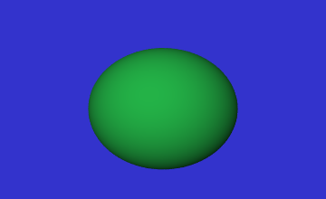
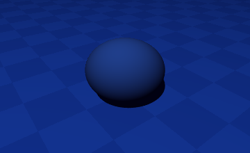
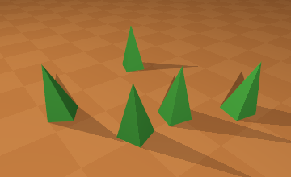

ocaml/povray tutorial
Beginning with povray and with the ocaml programming language.
First download and compile pov-bind. This is an ocaml interface for povray.
Check that ocaml and povray are correctly installed.
This tutorial should be compatible with "pov-bind" versions "0.11" or "0.12".
(But if you want to start more easily, you should probably take version "0.02", which is probably easier to use.)
Start a new script with the file-extension '.ml'.
You can start by defining a shorter alias for the main module "Povray" (at the beginning of the file):
module Pov = Povray
You can then define a color for the background:
let bg_color = PovColor.RGB(0.2, 0.1, 0.4)
Create a new empty-scene with the function
Pov.new_scene:
let () = let sc = Pov.new_scene () in let sc = Pov.add_background sc ~color:bg_color in let sc = Pov.add_camera sc ~location:cam_loc ~look_at in Pov.print_scene sc; ;;
You can then add a background with the background-color "bg_color", and a camera with the camera-location and where it should look at:
let cam_loc = (1.8, 4.8, 2.4) let look_at = (0.0, 0.6, 0.0)
These 2 vars should be defined before to be used, this is why you should place these 2 definitions before the call to the function "Pov.add_camera".
The complete script should then look like this:
module Pov = Povray module PovColor = Pov.Color let bg_color = PovColor.RGB(0.2, 0.1, 0.4) let cam_loc = (1.8, 4.8, 2.4) let look_at = (0.0, 0.6, 0.0) let () = let sc = Pov.new_scene () in let sc = Pov.add_background sc ~color:bg_color in let sc = Pov.add_camera sc ~location:cam_loc ~look_at in (* shapes can be added here *) Pov.print_scene sc; ;;
If this script is in a file called "scene1.ml", you should be able
to create the *.pov file "scene1.pov" like this:
ocaml -I ../src povray.cma scene1.ml > scene1.pov
Replace ../src by a path where to find the file
povray.cma.
This command should produce the file scene1.pov.
povray +W360 +H220 -V +A +Iscene1.pov
This command should produce the file "scene1.png":
The scene looks empty with only the background color, because it doesn't contain any shape yet.
We can add a light-source and a sphere:
module Pov = Povray
module PovColor = Pov.Color
let bg_color = PovColor.RGB(0.2, 0.2, 0.8)
let light_color = PovColor.RGB(1.0, 1.0, 1.0)
let cam_loc = (1.8, 4.8, 2.4)
let look_at = (0.0, 0.6, 0.0)
let () =
let sc = Pov.new_scene () in
let sc = Pov.add_background sc ~color:bg_color in
let sc = Pov.add_camera sc ~location:cam_loc ~look_at () in
let sc = Pov.add_light_source sc ~location:(6.0, 16.0, 4.0) ~color:light_color in
let color1 = PovColor.RGB(0.2, 1.0, 0.4) in
let texture = Pov.new_texture ~color:color1 () in
let sc =
Pov.add_sphere sc
~center:(0.0, 0.2, 0.0)
~radius:1.6
~texture () in
Pov.print_scene sc;
;;
The second .pov file scene2.pov will produce this image:
In the next script, we add an "ambient-light" and a "plane" to represent the ground, so that the sphere doens't look like to fly. We apply a "blue-checker" with 2 colors on the plane. With this new script scene3.ml, we get the .pov file scene3.pov which gives the image:

(* ambient-light *)
let sc = Pov.add_ambient_light sc ~color:(0.2, 0.1, 0.8) in
(* blue-checker *)
let texture =
let color1 = PovColor.RGB(0.10, 0.30, 0.80) in
let color2 = PovColor.RGB(0.12, 0.34, 0.86) in
Pov.new_checker ~color1 ~color2 ()
in
let sc = Pov.add_plane sc ~norm:(0, 1, 0) ~dist:(0) ~texture () in
We can also draw cylinders, boxes, cones and torus shapes, with predefined functions.
Custom shapes can also be defined with triangles.
This is possible to define triangles like this way:
let triangles =
[
( (-0.2, 0.0, 0.2), (0.0, 1.4, 0.0), ( 0.2, 0.0, 0.2) );
( ( 0.2, 0.0, 0.2), (0.0, 1.4, 0.0), ( 0.2, 0.0, -0.2) );
( ( 0.2, 0.0, -0.2), (0.0, 1.4, 0.0), (-0.2, 0.0, -0.2) );
( (-0.2, 0.0, -0.2), (0.0, 1.4, 0.0), (-0.2, 0.0, 0.2) );
]
Every triangle is defined with three vertices. A vertex is defined with
x, y, and z coordinantes (x, y, z).
The set of coordinates above creates a pyramid shape.
Here (0.0, 1.4, 0.0) is the top of the "pyramid".
We need 4 triangles to define this "pyramid".
The mesh created with these coordinates can be added to the "scene" with the function:
PovMesh.add_mesh sc ~triangles ~texture ~translate ~rotate ()
The coordinates can be used several times to create several meshes, with different locations,
that can be defined with the ~translate parameter.
You can find the documentation of the api of the version "0.11" here:
For the documentation of the version "0.02", which is probably easier to use for beginning:
Here are some images that I made with it: